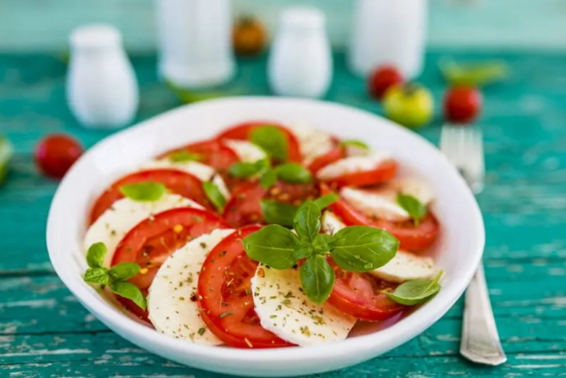

Ingredientes
- 1 tomate
- Rodajas de mozzarella
- Hojas de albahaca
- Aceite de oliva
- Sal

Elaboración
- Corta el tomate en rodajas o gajos.
- Coloca las rodajas de mozzarella y la albahaca encima.
- Añade sal y un chorro generoso de aceite de oliva.
- Sirve inmediatamente.
Descarga nuestra receta aquí